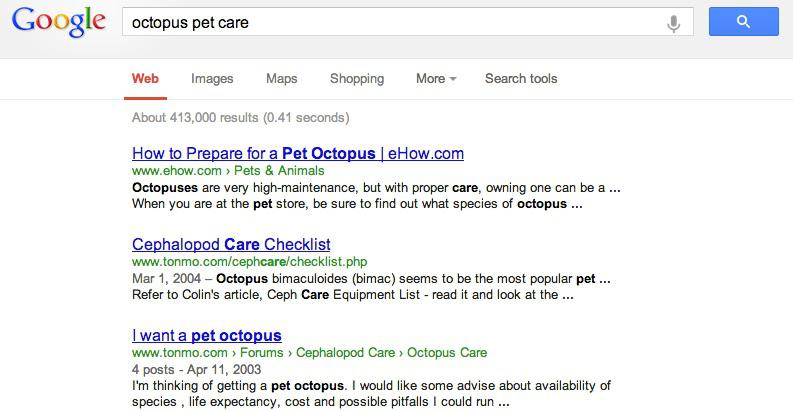
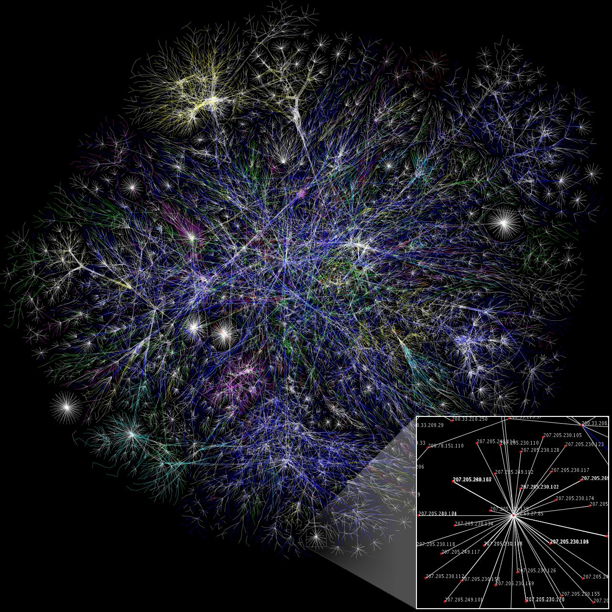
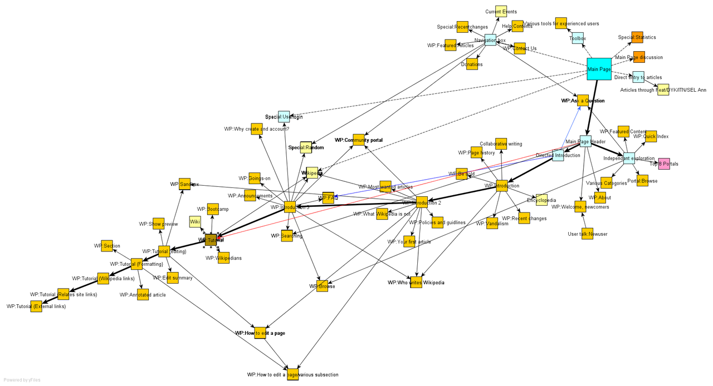

The Skeleton Supporting Search Engine Ranking Systems

A lot of the research I’m interested in relates to networks – measuring the properties of networks and figuring out what those properties mean. While doing some background reading, I stumbled upon some discussion of the algorithm that search engines use to rank search results. The automatic ranking of the results that come up when you search for something online is a great example of how understanding networks (in this case, the World Wide Web) can be used to turn a very complicated problem into something simple.
Ranking search results relies on the assumption that there is some underlying pattern to how information is organized on the WWW- there are a few core websites containing the bulk of the sought-after information surrounded by a group of peripheral websites that reference the core. Recognizing that the WWW is a network representation of how information is organized and using the properties of the network to detect where that information is centered are the key components to figuring out what websites belong at the top of the search page.
Suppose you look something up on Google (looking for YouTube videos of your favorite band, looking for edifying science writing, tips on octopus pet care, etc): the search service returns a whole spate of results. Usually, the pages that Google recommends first end up being the most useful. How on earth does the search engine get it right?
First I’ll tell you exactly how Google does not work. When you type in something into the search bar and hit enter, a message is not sent to a guy who works for Google about your query. That guy does not then look up all of the websites matching your search, does not visit each website to figure out which ones are most relevant to you, and does not rank the pages accordingly before sending a ranked list back to you. That would be a very silly way to make a search engine work! It relies on an individual human ranking the search results by hand with each search that’s made. Maybe we can get around having to hire thousands of people by finding a clever way to automate this process.
So here’s how a search engine does work. Search engines use robots that crawl around the World Wide Web (sometimes these robots are referred to as “spiders”) finding websites, cataloguing key words that appear on those webpages, and keeping track of all the other sites that link into or away from them. The search engine then stores all of these websites and lists of their keywords and neighbors in a big database.
Knowing which websites contain which keywords allows a search engine to return a list of websites matching a particular search. But simply knowing which websites contain which keywords is not enough to know how to order the websites according to their relevance or importance. Suppose I type “octopus pet care” into Google. The search yields 413,000 results- far too many for me to comb through at random looking for the web pages that best describe what I’m interested in.
Knowing the ways that different websites connect to one another through hyperlinks is the key to how search engine rankings work. Thinking of a collection of websites as an ordinary list doesn’t say anything about how those websites relate to one another. It is more useful to think of the collection of websites as a network, where each website is a node and each hyperlink between two pages is a directed edge in the network. In a way, these networks are maps that can show us how to get from one website to another by clicking through links.
Here is an example of what a network visualization of a website map of a large portion of the WWW looks like. (Original full-size image here.)
{kind=link}

Here is a site map for a group of websites that connect to the main page of English Wikipedia. (Original image from here.) This smaller site map is closer to the type of site map used when making a search using a search engine.

So, how does knowing the underlying network of the search results help one to find the best website on octopus care (or any other topic)? The search engine assumes that behind the seemingly random, hodgepodge collection of files on the WWW, there is some organization in the way they connect to one another. Specifically, the search engine assumes that finding the websites most central to the network of search results is the same as finding the search results with the best information. Think of a well-known, trusted source of information, like the New York Times. The NY Times website will have many other websites referencing it by linking to it. In addition, the NY Times website, being a trusted news source, is likely to refer to the best references for other sources that it wants to refer to, such as Reuters. High-quality references will also probably have many incoming links from websites that cite them. So not only does a website like the NY Times sit at the center of many other websites that link to it, but it also frequently connects to other websites that themselves are at the center of many other websites. It is these most central websites that are probably the best ones to look at when searching for information.
When I search for “octopus pet care” using Google I am necessarily assuming that the search results are organized according to this core-periphery structure, with a group of important core websites central to the network surrounded by many less important peripheral websites that link to the core nodes. The core websites may also connect to one another. There may also be websites disconnected from the rest, but these will probably be less important to the search simply because of the disconnection. Armed with the knowledge of the connections between the different relevant websites and the core-periphery network structure assumption, we may now actually find which of the websites are most central to the network (in the core), and therefore determine which websites to rank highly.
Let’s begin by assigning a quantitative “centrality” score to each of the nodes (websites) in the network, initially guessing that all of the search results are equally important. (This, of course, is probably not true. It’s just an initial guess.) Each node then transfers all of its centrality score to its neighbors, dividing it evenly between them[1]. (Starting with a centrality score of 1 with three neighbors, each of those neighbors receives 1/3.) Each node also receives a some centrality from each neighbor that links in to it. Following this first step, we find that nodes with many incoming edges will have higher centrality than nodes with few incoming edges. We can repeat this process of dividing and transferring centrality again. Nodes with many incoming links will have more centrality to share with their neighbors, and nodes with many incoming links will themselves also receive more centrality.
After repeating this process many times, we begin to see a difference between which nodes have the highest centrality scores: nodes with high centrality are the ones that have many incoming links, or have links to other central nodes, or both. This algorithm therefore differentiates between the periphery and the core of the network. Core nodes receive lots of centrality because they link to one another and because they have lots of incoming links from the periphery. Peripheral nodes have fewer incoming links and so receive less centrality than the nodes in the core. Knowing the centrality scores of search results on the WWW makes it pretty straightforward for us to quantitatively rank which of those websites belongs at the top of the list.
Of course, there are more complex ways that one can add to and improve this procedure. Google’s algorithm PageRank (named for founder Larry Page, not because it is used to rank web pages) and the HITS algorithm developed at Cornell are two examples of more advanced ways of ranking search engine results. We can go even further: a search engine can keep track of the links that users follow whenever a particular search is made. (This is almost the same as the company hiring someone to order sought-after web pages automatically whenever a search is made, except all the company lets the user do it for free.) Over time, search engines can improve their methods for helping us find what we need by learning directly from the way users themselves prioritize which search results they pursue. Still, these different search engine ranking systems may operate using slightly different methods, but all of them depend on understanding the list of search results within the context of a network.
Notes
1. ^ It's not always all - there are other variations where nodes only transfer a fraction of their centrality score at each step.
Sources (and further reading)
I wanted to include no mathematics in this post simply because I cannot explain the mathematics behind these algorithms and their convergence properties better than my sources can. For those of you who want to see the mathematical side of the argument for yourselves (which involves treating the network adjacency matrix as a Markov process and finding its nontrivial steady state eigenvector), do consult the following two textbooks:
Easley, David, and Jon Kleinberg. Networks, Crowds, and Markets: Reasoning about a Highly Connected World. Cambridge University Press, 2010 (Chapter 14 in particular)
Newman, Mark. Networks: an Introduction. Oxford University Press, 2010 (Chapter 7 in particular)
A popular book on the early development of network science that contains a lot of information on the structure of the WWW:
Barabasi, Albert-Laszlo. Linked: How Everything is Connected to Everything Else and What It Means. Plume, 2003.
A book on the history of modern computing that contains an interesting passage on how search engines learn adaptively from their users (that deserves a shout-out in this blog post).
Dyson, George. Turing's Cathedral. Pantheon, 2012.